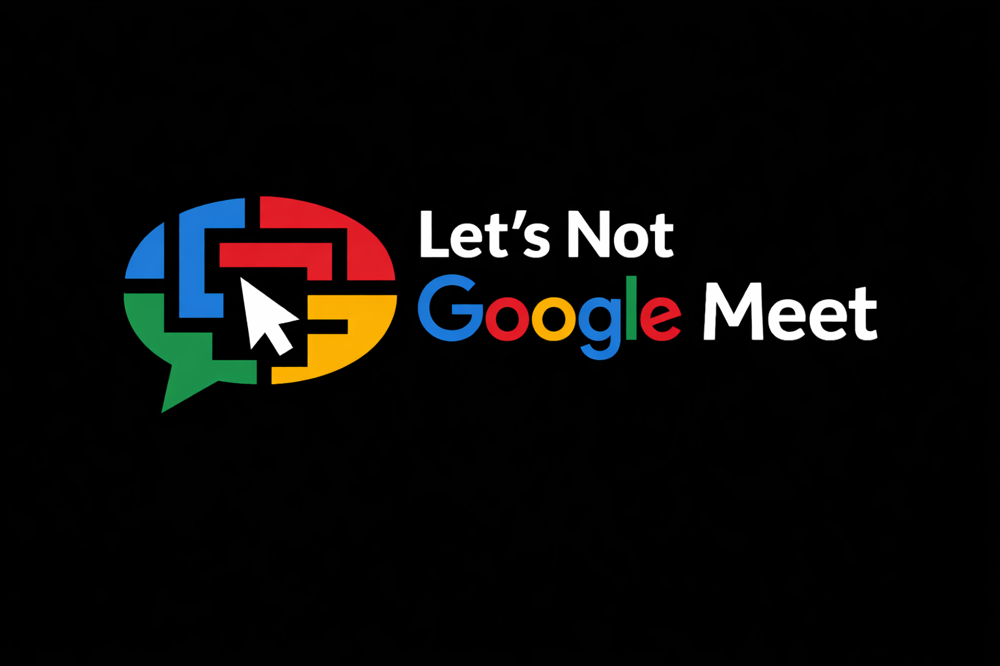

The Case
A procedural platform decision triggers unexpected consequences. What first appears routine reveals deeper structural patterns embedded within automated governance systems.
A platform accountability documentary.
Lets Not Google Meet is a feature documentary in development exploring digital transparency, platform accountability and governance within automated decision-making systems. The film investigates how scale, algorithmic workflows and institutional escalation pathways shape economic visibility and public trust.
Through research interviews, documentation analysis and system mapping, the project examines the balance between automation and human oversight. The documentary positions itself within the broader discourse of digital governance and corporate accountability in platform-driven ecosystems.
Development is currently underway, with stakeholder engagement and investigative research in progress. Festival submissions are targeted for 2027.
A procedural platform decision triggers unexpected consequences. What first appears routine reveals deeper structural patterns embedded within automated governance systems.
Escalation pathways multiply while clarity diminishes. Appeals, forms and automated responses replace meaningful dialogue, exposing friction points within scaled infrastructure.
Policy frameworks, correspondence and expert interviews uncover the architecture behind algorithmic decision-making and transparency mechanisms.
Beyond individual impact lies a broader question of institutional trust, corporate responsibility and whether governance mechanisms evolve as rapidly as the technologies they regulate.